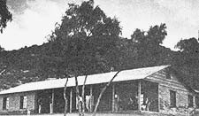
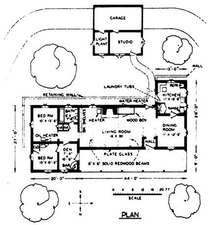
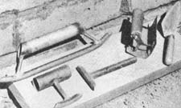
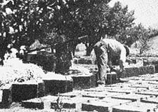
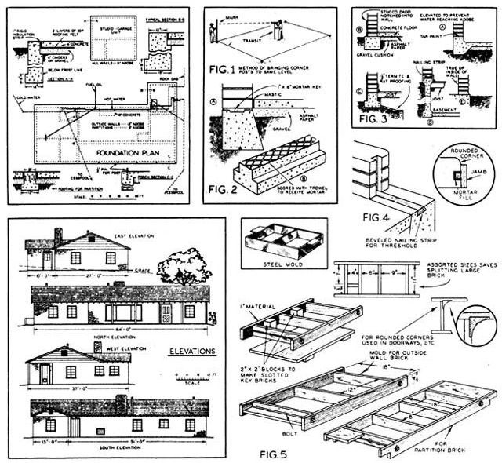
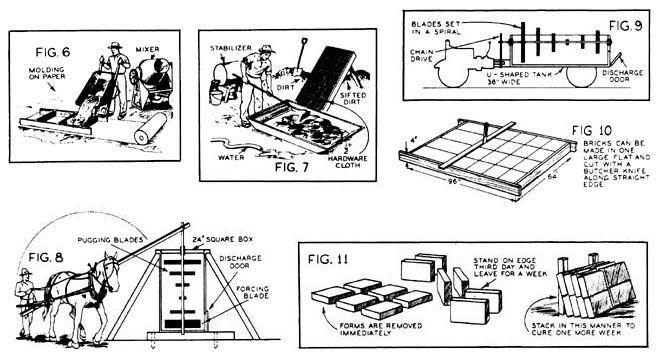

Lick the material shortage by building with adobe brick; made of stabilized soil, it is as durable as concrete and much more interesting.
Once again, we're pleased to roll the clock back 30 years in order to reprint another in our series of articles by Hi Sibley (see "100 Concrete Blocks Per Hour" in MOTHER NO. 45 for the first in the series).
Hi, in case you've never heard of his work, was living a MOTHER-type life of do-ityourself adobe houses, organic gardening, homestead bees, and like that away back at the end of World War II. And not only living it . . . but writing about it in a great number of magazines. Unfortunately for us all, more folks back there in the late 40's were more interested in big cars, city jobs, and new homes in the suburbs . . . than were interested in Hi's subjects.
Now that so many of us are rediscovering Mr. Sibley's way of life, though, we think it's only fair to honor the man who was 30 years ahead of his time by again publishing some of his down-to-earth gems one more once. This-the first of a twopart article-originally appeared in the February 1947 issue of Mechanix Illustrated (copyright 1947 by Fawcett Publications, Inc.) and is reprinted by permission.
There are few sections in the United States where the soil does not contain clay suitable for making "adobe bricks". In view of the fact that the bulk of this material costs you nothing, and that you can make the brick yourself, it is the ideal medium for home construction. When mixed with an asphalt emulsion stabilizer the brick is as waterproof as concrete. It is an excellent insulator against heat, cold, and sound. It is fireproof, termite-proof, and freezeproof.
What more can you ask-atom bomb-proof?
Adobe for the old California missions was mixed with water and straw in the original excavation. The modern way is to use a mechanical mixer so as to impart a uniform quality to the brick. Formulas will be given later. In the meantime, consider the foundation. Since 12 in. wide (one story high) adobe walls weigh about 700 lbs. to the running foot, excluding the roof, a heavier footing will be required than for a frame house.
THE FOUNDATION. The first step is to grade the site and get the corner stakes level with a transit. Trenches for the footing are dug and flooded with water overnight. The simplest footing design is shown at A, Fig. 2. This has a shallow key for mortar upon which the first course of brick is laid. In the inverted T design, B, the top is scored with a trowel to retain the mortar. This is the method used in the author's home.
In preparing the ground remove all organic matter and roots. The slab is poured over cinders or crushed stone, spread over the entire surface to an 8 in. depth, and well tamped. This fill serves the double purpose of insulation and waterproofing. Over it place a layer of reinforced building paper and cement the joints with hot asphalt.
A 4 in. slab of concrete is then poured over the building paper. Use a 3:2 1/4:1 mix. Maximum size of the coarse aggregate should be one inch. Do not use more than six gallons of water per sack of cement including the moisture contained in the sand and gravel. Cure the concrete by sprinkling at intervals with a fine spray of water.
At A, Fig. 3, is shown a type of footing suitable for a garage. The brick begins well above the floor level and thus above reach of water when hosing down the floor. To protect the outside wall, the first four courses are plastered with stucco, with the top notched into the wall, B. Foundations for wood floors over basements are shown at C and D. In all cases the bricks are trued up on the inside as in E if the interior is not to be plastered. Otherwise, true up the outside.
At outside doorways lay a beveled 2 X 4 in the concrete to which the saddle or threshold can be screwed, Fig. 4. This illustration also shows the notched brick to receive the door jamb batten, which will be described later.
MAKING THE BRICK. Molds for making the adobe brick are shown in Fig. 5. A 4 in. thickness is commonly used because it cures better than a thicker one. The standard size is 12 X 18 in. having a volume of 1/2 cu. ft. and a face area of 1/2 sq. ft., although in the house shown in the photos, bricks of 16 in. length were used. For the key bricks, adjoining door, and window openings, wooden blocks are nailed inside the molds, as shown, and for rounded corners, curved pieces are installed. A mold, making several smaller bricks for fillers, will come in handy and nave splitting the standard size brick.
Soil must contain sufficient clay to bind strongly when dried after mixing with water. Heavy soils are usually too rich in clay and require blending with sand to overcome excessive cracking during drying. To obtain the general suitability of any soil, mold a 2 in. mud ball from a sample taken below the grass roots. If the ball dries hard and is not easily crushed, it may prove suitable for stabilized bricks. The strength is due to the natural bond of the clay and not to the stabilizer. If the soil is difficult to mix with water and the ball cracks on drying, additional sand or straw is required. Soils which contain alkalies should not be used.
The important ingredient of adobe bricks is a liquid stabilizer which not only renders them waterproof but increases their hardness until they are practically as durable as concrete. Stabilizer is sold under the trade name of Bitudobe manufactured by the American Bitumuls Company, San Francisco, California, and Bitumuls sold by the Standard Oil Co. of California.
Two series of tests should be made to determine the suitability of the soil and the amount of stabilizer required. The first series uses water and soil, for the second series add the stabilizer. If the soil is heavy clay or adobe, mix straight soil for the first brick; for No. 2, use three parts soil and one of sand; for No. 3, two and one-half parts soil, one and one-half parts sand; No. 4, two parts soil and two parts sand; No. 5, one and onehalf parts soil, two and one-half parts sand; No. 6, one part soil, three parts of sand. Mold a jell size brick in each case. Too much clay produces cracking; too much sand decreases strength and resistance to erosion. Place the mold on level ground and force the mud into the corners with the hands. Remove excess mud with a straightedge across the top and lift off the form immediately. In about two days turn on edge. After drying in the sun two weeks or more, examine for cracking and strength, This test determines whether additional blending is advisable. Small center cracks are not harmful.
Using the soil mixture that has shown satisfactory strength and the least cracking in the previous series, make up a new batch and divide into four parts, each enough for a standard size brick, 4 X 12 X 18 in. To No. 1 add two pounds or one quart of stabilizer; two and onehalf pounds to No. 2; three pounds to No. 3; three and one-half pounds to No. 4. Thus each brick will contain approximately 4, 5, 6, and 7% of stabilizer respectively by weight of the 50-pound brick. Mix each portion thoroughly and mold in the brick form, saving enough from each for a pat about 1/2 X 4 in. in diameter. Allow the bricks to dry in the sun, but hasten the drying of the pats by placing in a slow oven (150-200°F). When the pats are cool, immerse in cold water for 24 hours.
WALLS
3200 adobe brick 4 X 12 X 16 in: outside walls
750 adobe brick 4 X 8 X 16 in. partitions
6 cu. yds. adobe, 150 gals. stabilizer for mortar
FOUNDATION
30 cu. yds. concrete
140 sq. yds. double strength tar paper lumber for forms
WINDOWS AND DOORS
354 lineal ft. 2 X 8 in. redwood, frames
56 lineal ft. 2 X 14 in. redwood, sills
820 lineal ft. stops
190 sq. ft. 2 in. redwood for doors
15 pcs. pine 3 X 12 X 48 in. headers, windows, outside doors
7 pcs. pine 3 X 8 X 48 in. headers, inside doors
1 pc. pine 9 X 12 X 14 ft. headers, view window
1 pc. pine 6 X 8 X 8 ft. headers, living-dining doorway
9 steel sash, 37-1/2 X 51-1/2 in., B lights
3 steel sash, 37-1/2 X 37-1/2 in., b lights
BOND BEAM
3 cu. yds. concrete form lumber
1 roll barbed wire
PLATE
178 lineal ft. 2 X 12 in. pine outside walls
84 lineal ft. 2 X 8 in. pine partitions
54 anchor bolts 1/2 X 7 in.
CEILINGS
5 solid redwood beams 6 X 6 in. X 18 ft.
2 solid redwood beams 3 X 6 in. X 18 ft. for ends
26 pine joists 2 X 6 in. X 12 ft.
12 pine joists 2 X 6 in. X 14 ft.
6 pine joists 2 X 6 in. X 18 ft.
512 bd. ft. random width 1 in. redwood, living room
754 bd. ft. 1 X 12 in. knotty pine, for other ceilings
BATHROOM PLASTERING
3 bags hardwall plaster
1 bag stucco
1/2 ton sand
ROOF
70 pcs. 2 X 4 in. X 16 ft. rafters
18 pcs. 2 X 4 in. X 9 ft. rafters
30 pcs. 2 X 4 in. X 12 ft. tie beams
1800 bd. ft. 1 X 8 in. pine sheathing
100 bdls. No. 1 cedar shingles
40 pounds No. 4 galv. shingle nails
10 pounds No. 3 galv. shingle nails
2 root vents, plumbing, bath and kitchen
1 roof jack, 3in. for water heater
2 roof jacks, 6 in. for space heater
216 ft. 2 X 4's for ratter bracing plus flashing tin for valleys and chimney
GABLES
70 lineal ft. 2 X 4's
200 bd. ft. 1 X 12 in. pine siding
2 louvres, 24 X 30 in.
1 louvre, 18 X 24 in.
CUPBOARDS AND BOOKSHELVES
360 board ft. knotty pine
FIREPLACE
125 firebrick
40 red brick, raised hearth
1 damper, 36 in.
4 sections oval flue tile, 13 X 17 in.
1 angle bar, 1/4 X 6 X 44 in.
INTERIOR CORNICE AND BASEBOARD
276 lineal ft. 1 X 6 in. redwood
276 lineal ft. 1 X 5 in. oak
PLUMBING
1 Kohler bathtub Complete
1 Kohler close-coupled toilet
1 Kohler vitreous china lavatory
1 20 gal. water heater
1 Kohler double sink
1 single laundry tray
Plus fittings, pipe lines, sill cocks, etc.
LINOLEUM
24 yds. No. 1 grade, for bath and kitchen
PAINT
15 gals. Kemtone, ivory
2 gals. stain for gables
2 gals. linseed oil
MISCELLANEOUS
20 sq. ft. tile bathroom
1296 sq. ft. ceiling insulation
Hardware, nails, etc.
This has been the first of a two-part artitle that was originally published in Mechanix Illustrated in February of 1947. The second half of the piece (which originally appeared in the March 191,7 Mechanix Illustrated ) will be printed in MOTHER NO. 47.
|
 The author's adobe brick home, Tres Fuentos Rancho, in Nuevo, California. |
 Some of the mason's tool used in the brick. |
 Placing the bricks on the edge to allowfor additional drying and curing |
|
 |
 |
 |